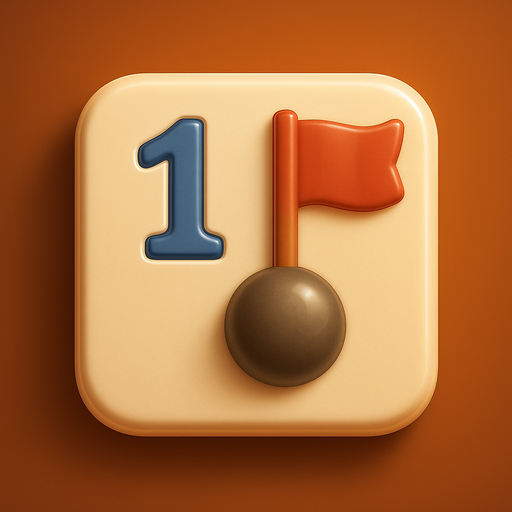
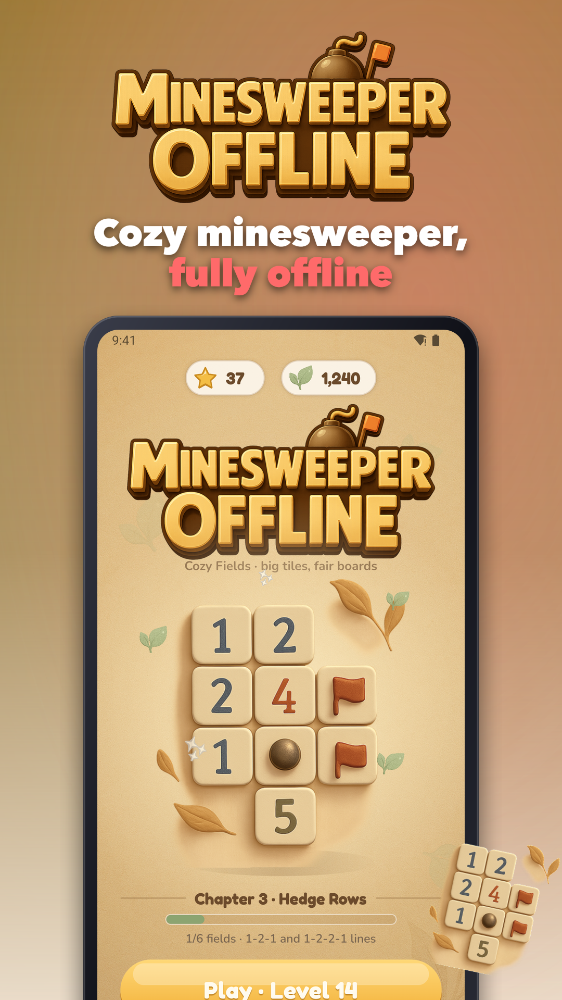
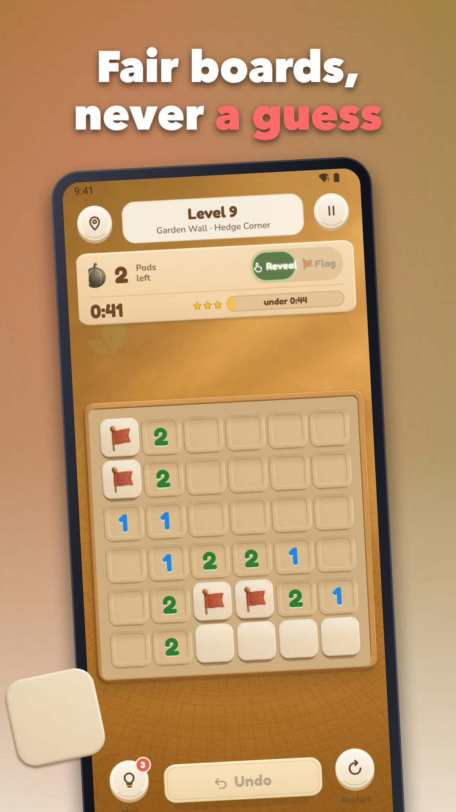
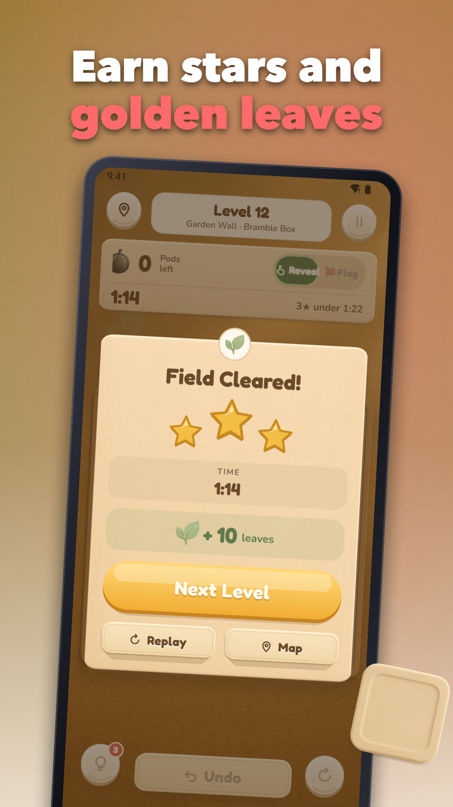
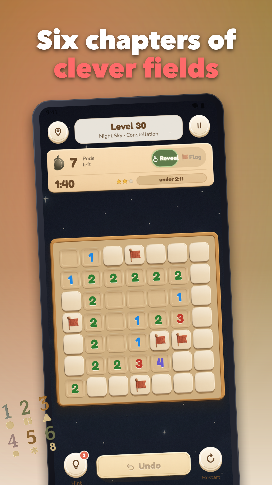
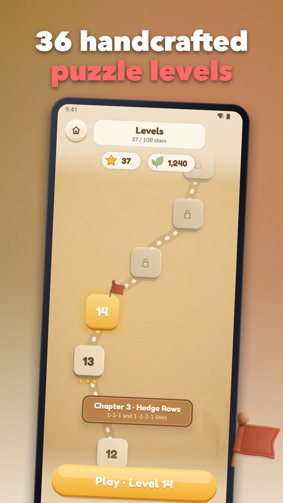
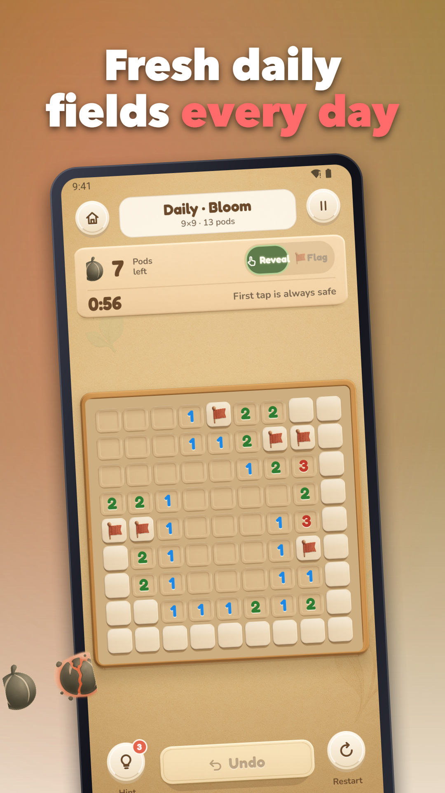

Cozy Fields: Minesweeper
Classic minesweeper to play offline: big tiles, 36 levels and a calm, cozy look.






Minesweeper offline rebuilt for comfort and clarity in quick, one‑handed sessions. Clear cozy fields, mark mines, and relax with smart touch controls that reduce mis-taps. Play anywhere—no account, no login, no cloud save, and fully offline progress on your device.
What’s inside
• 36 levels: handcrafted boards with a smooth difficulty ramp from calm to challenging
• Daily puzzle: a fresh seed each day to keep your streak alive
• Classic flow: reveal safe tiles, flag mines, and solve every level by logic, never by guessing
• Big tiles: a setting for larger tiles on free-play boards
• Easy mode: learn the patterns without pressure before stepping up
• Timed mode: chase 3 stars with time thresholds per level
• Undo & restart: one-tap recovery and clean restarts when you want a do‑over
• Hints: confirm a single tile when you need a nudge
• Colorblind mode: number palettes and markers designed for readability
• Sound & haptics: subtle clicks and gentle vibration, all toggleable
• Coins & themes: earn coins as you play and spend thoughtfully—no loot boxes
• Streaks: keep a daily run going with the daily challenge
Controls that feel right
• Tap to reveal, press-and-hold to flag with a light haptic tick
• Optional on-screen toggle for reveal/flag if you prefer not to long‑press
• Big tiles and clean UI minimize accidental touches in portrait play
Progression that respects your time
• 36 levels with star ratings encourage mastery without locking you out
• Daily challenge adds variety and a reason to return
• Plays great in 1–3 minute sessions while also suiting longer relax‑and‑solve runs
Fair ads and purchases
• No banner before level 5
• First interstitial after level 10; then at most one every 4 levels
• Rewarded ads only when you choose (for a hint or similar utility)
• In‑app purchases: Remove Ads, Pile of Coins, Chest of Coins. That’s it—no loot boxes
Why Cozy Fields
• A clean, calm take on classic minesweeper with thoughtful extras
• Designed for thumbs: big tiles, simple gestures, and readable visuals
• Works fully offline, so your puzzle time is always yours
If you love classic minesweeper and want bigger tiles and a gentler start, Cozy Fields is for you. Settle in, clear the board, and enjoy the quiet satisfaction of a perfect solve.
Ready to relax? Open a field, place a flag, and play now.
Support: jeets98e@gmail.com